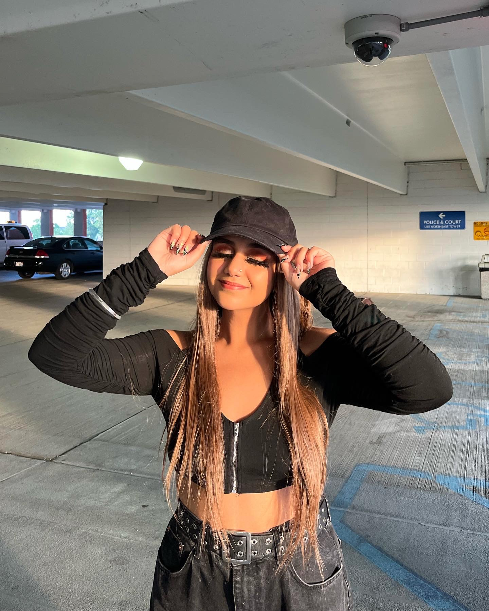
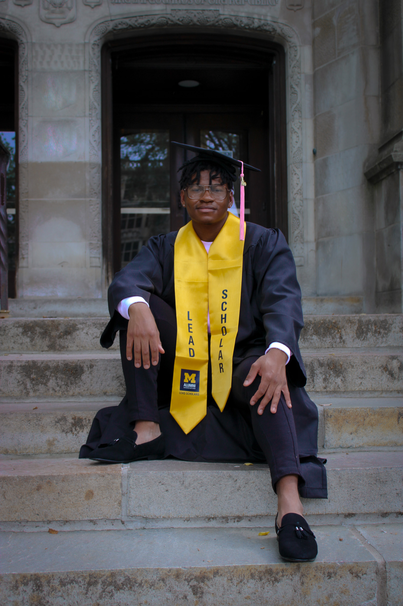
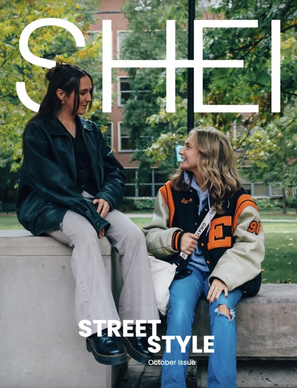

Hello 👋 I'm
Sureet Sarau
a photographer
a creative
I am a professional photographer with over 5 years of experience. I focus on fashion-based portrait photography, but have experience in event and editorial photography, as well.


I have worked in several environments from studio settings to outdoor shoots to street style shooots. I have shot photos for news journals, engagements, graduations, senior photos, and brand photos, as well.
My work has been published several times for my political photo journalism and editorial work. I previously worked as the lead photographer for a clothing brand, and am currently a photo editor for SHEI Magazine , the only fashion, culture, and arts student organization recognized by the University of Michigan.
